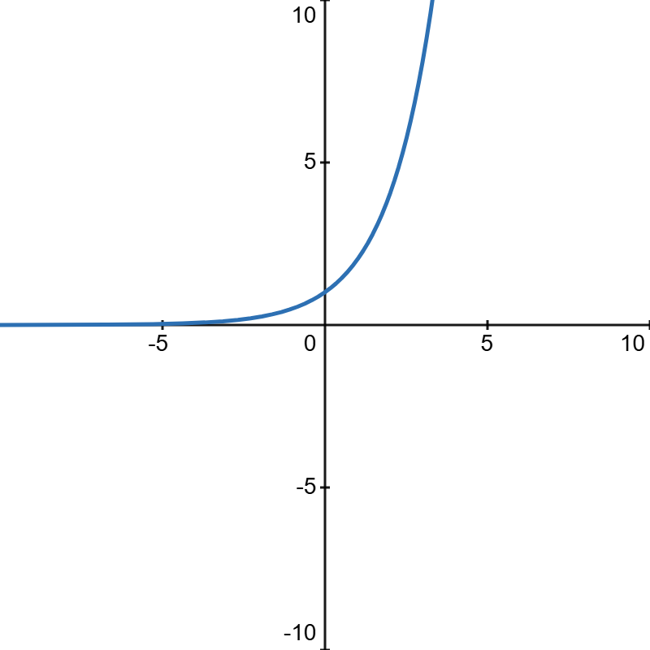

扇形弧长公式：\(l = \theta r\)
扇形面积公式：\(S = \frac12l r = \frac12\theta r^2\)
圆锥体积公式：\(V = \frac{1}{3}Sh\)
椭球体体积：\(V = \frac{4}{3}\pi ab^2\)
球体体积：\(V = \frac{3}{4}\pi r^3\)
| \(a^x(a \gt 1)\) |  |
| \(a^x(a \lt 1)\) | |
| 正整数集 | \(\mathbb{N}_+\)或\(\mathbb{N}^*\) |
描述函数的变化速率
积分：描述函数的累计结果
平面角：以角的顶点为圆心作单位圆，平面角截单位圆的长度即为其弧度值。
这也是为什么平面角取值为\([0, 2\pi]\)
立体角：以角的顶点为球心作单位球，立体角截单位球的面积即为其大小。
因此立体角取值为\([0, 4\pi]\)
笛卡尔坐标系表示两个同纬度的矩阵对应元素相乘，\(A\odot B\) or \(A\circ B\)
长度单位换算 $$1~m = 10~dm = 100~cm = 1\times 10^3~mm = 1\times 10^6~\mu m = 1\times 10^9 nm$$ $$e = 2.71828$$ $$(a+b)^3 = a^3 + 3a^2b + 3ab^2 + b^3$$ \(a^n - b^n\)因式分解公式 $$a^n - b^n = (a-b)(a^{n-1} + a^{n-2}b + \cdots + ab^{n-2} + b^{n-1})$$ 穿针引线法从\(x\)轴\(+\infty\)处开始.
若\(x\)的最高次项为正数，则从上方穿入；若\(x\)的最高次项为负数，则从下方穿入.
按照每一项的幂数，奇穿偶不穿.
扇形弧长公式：\(l = \theta r\)
即：\(\sum\limits_{i=0}^{n-1}2^i = 2^n-1\)
证明如下：
$$ \begin{align} 2^n &= 2\times 2^{n-1}\\ &= 2^{n-1} + 2^{n-1}\\ &= 2^{n-1} + 2^{n-2} + 2^{n-2}\\ &= 2^{n-1} + 2^{n-2} + 2^{n-3} +\cdots + 2^1 + 2^0 + 2^0\\ &= \sum\limits_{i=0}^n2^i + 1 \end{align}$$ 对于任意一个非负整数\(n\)，集合\(\{2^i\}\)共有\(n+1\)个子集的和小于\(n\)证明如下：
当\(n = 0\)时，有：
结论适用；
当\(2^0\leq n<2^1\)时，有：
结论适用；
当\(2^1\leq n<2^2\)时，有：
结论适用；
当\(2^2\leq n<2^3\)时，由于\(\sum\limits_{i=0}^{n-1}2^i\leq 2^n -1\)，故\(\{2^0, 2^1\}\)的全部\(2^2\)个子集均满足条件，仅需考虑带\(\{2^2\}\)的子集。
已知带\(\{2^2\}\)的条件下，只需考虑\(\{2^0, 2^1\}\)对于\(n - 2^2\)满足条件的子集数量。
由于\(0\leq n - 2^2<2^2\)，故此时共有\(n - 2^2 + 1\)个子集满足条件。
综上，当\(2^1\leq n<2^2\)时，满足条件的子集数有\(n - 2^2 + 1 + 2^2 = n-1\)个。
以此类推，结论适用于全体非负整数。
证明如下：
考虑一个长度为n的子集
$$\{x_1, x_2, \cdots, x_n\}$$即为\(2^1\times\{x_1, x_2, \cdots, x_{n-1}\}\)的子集数量
以此类推，为\(2^{n-1}\times\{x_1\}\)的子集数量
对于\(\{x_1\}\)的子集，有：
故一个长度为n的集合，共有\(2^n\)个子集，得证。
一个不可再分的、没有内部逻辑结构的命题或变元。只有True或False两种值。
联结词\(p\rightarrow q\)：如果\(p\)为真时，\(q\)一定为真。
\(p\rightleftarrows q\)：\(p\)和\(q\)的值相同时为真
| \(p\) | \(q\) | \(p\rightarrow q\) | \(p\rightleftarrows q\) |
| 0 | 0 | 1 | 1 |
| 0 | 1 | 1 | 0 |
| 1 | 0 | 0 | 0 |
| 1 | 1 | 1 | 1 |